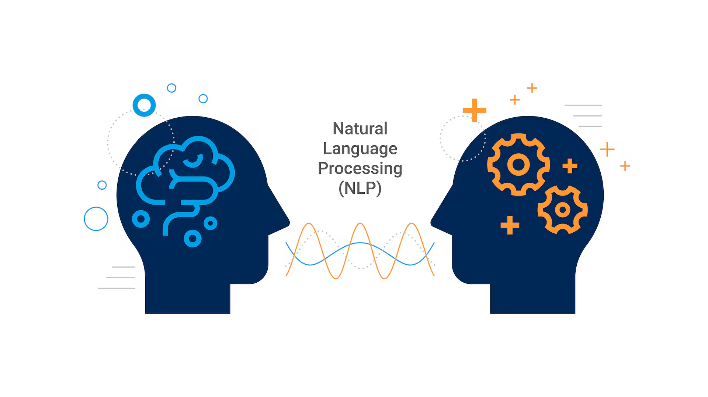
Natural Language Processing (NLP) is a critical domain of artificial intelligence that focuses on enabling machines to understand, interpret, and manipulate human language. Unlike structured data, human language is inherently ambiguous, context-dependent, and highly dynamic. NLP bridges the gap between human communication and machine understanding by transforming textual data into structured representations that machines can process. This handbook is designed to provide a deep engineering perspective of NLP, covering foundational techniques, linguistic processing, statistical methods, and neural architectures. The goal is not just to use NLP tools, but to understand their internal mechanics, trade-offs, and real-world applicability in designing scalable and efficient systems.
Text preprocessing is the foundational stage of any NLP pipeline, where raw textual data is cleaned and normalized before further processing. Real-world text data is often noisy and contains punctuation, HTML tags, emojis, inconsistent casing, and irrelevant symbols that can negatively impact model performance. Preprocessing ensures that the input data is standardized, making it easier for models to extract meaningful patterns. It reduces vocabulary size, eliminates redundancy, and improves computational efficiency. Without preprocessing, models may learn incorrect or misleading relationships, leading to poor generalization. Therefore, preprocessing is not just a cleaning step—it is a crucial transformation stage that directly influences the effectiveness of downstream NLP tasks.
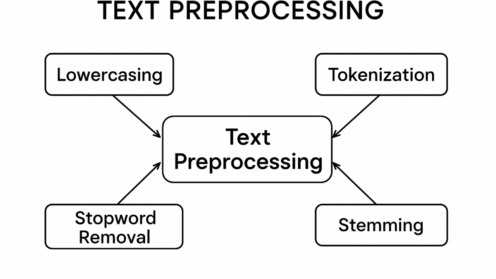
import re text = "Hello!!! NLP is AMAZING :)" clean_text = re.sub(r'[^a-zA-Z ]', '', text).lower() print(clean_text)
Tokenization is the process of splitting text into smaller meaningful units called tokens. These tokens can be words, characters, or subwords depending on the task. Since machine learning models cannot process raw text directly, tokenization converts text into structured inputs. It plays a crucial role in defining vocabulary, sequence length, and computational efficiency. Poor tokenization can lead to information loss or increased complexity. Modern NLP systems often use subword tokenization to handle unknown words and reduce vocabulary size. Thus, tokenization is a key design decision that directly affects model performance and scalability.
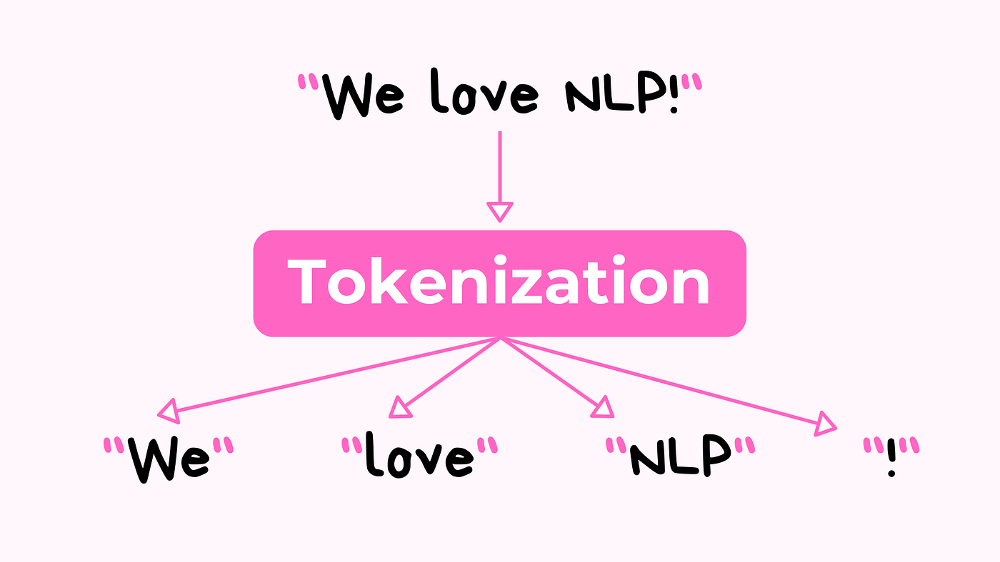
from nltk.tokenize import word_tokenize text = "NLP is powerful" tokens = word_tokenize(text) print(tokens)
Stemming is a normalization technique used to reduce words to their root form by removing suffixes and prefixes. It is a rule-based heuristic approach that does not consider linguistic correctness, often producing non-dictionary words. Despite its limitations, stemming is computationally efficient and widely used in search engines and information retrieval systems. By reducing variations of a word to a common base, it helps improve matching and reduces vocabulary size. However, it may distort meaning, making it less suitable for tasks requiring semantic accuracy.
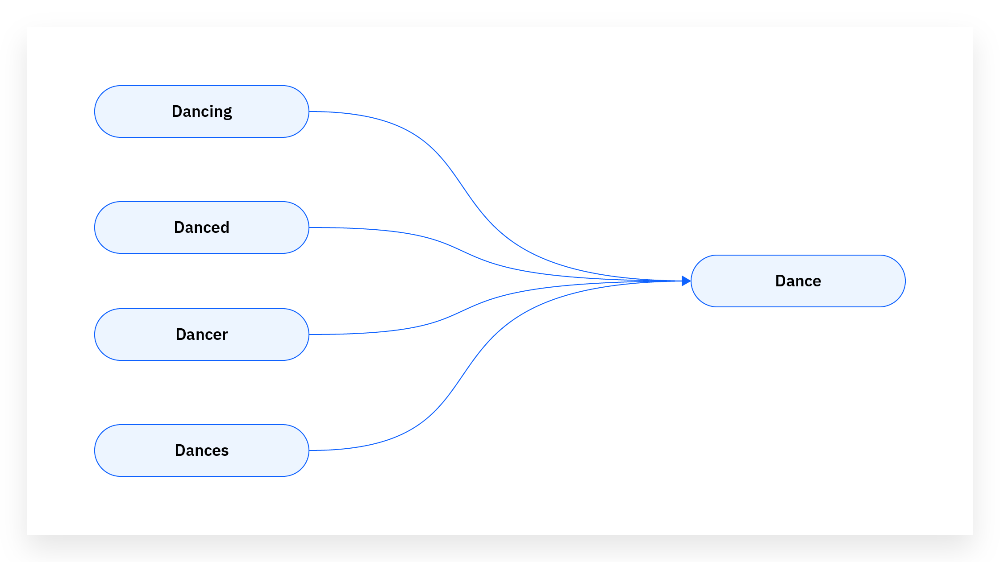
from nltk.stem import PorterStemmer stemmer = PorterStemmer() words = ["running", "runner", "runs"] print([stemmer.stem(w) for w in words])
Lemmatization reduces words to their base or dictionary form by considering context and grammar. Unlike stemming, it produces meaningful words and uses linguistic rules and vocabulary databases. It relies on part-of-speech tagging to determine the correct base form. Lemmatization is more accurate but computationally expensive. It is widely used in applications requiring semantic understanding, such as chatbots and translation systems.
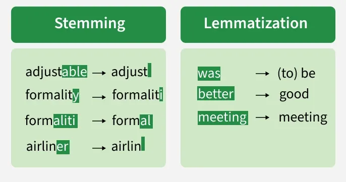
import spacy
nlp = spacy.load("en_core_web_sm")
doc = nlp("running better cars")
print([token.lemma_ for token in doc])
Bag of Words is a simple technique that converts text into numerical vectors based on word frequency. It ignores word order but captures occurrence information. Each document is represented as a vector of word counts, making it easy to implement and interpret. However, it lacks contextual understanding.
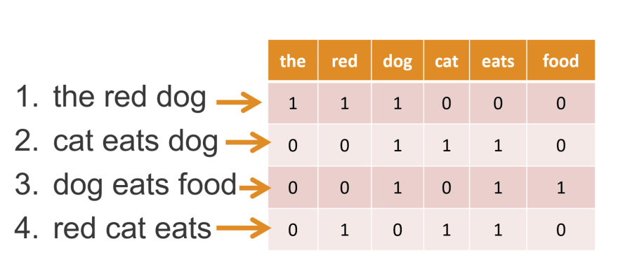
from sklearn.feature_extraction.text import CountVectorizer docs = ["NLP is fun", "NLP is powerful"] vectorizer = CountVectorizer() X = vectorizer.fit_transform(docs) print(X.toarray())
TF-IDF evaluates word importance based on frequency in a document relative to corpus frequency. It reduces the weight of common words and highlights rare but meaningful terms. It is widely used in search engines and document ranking.
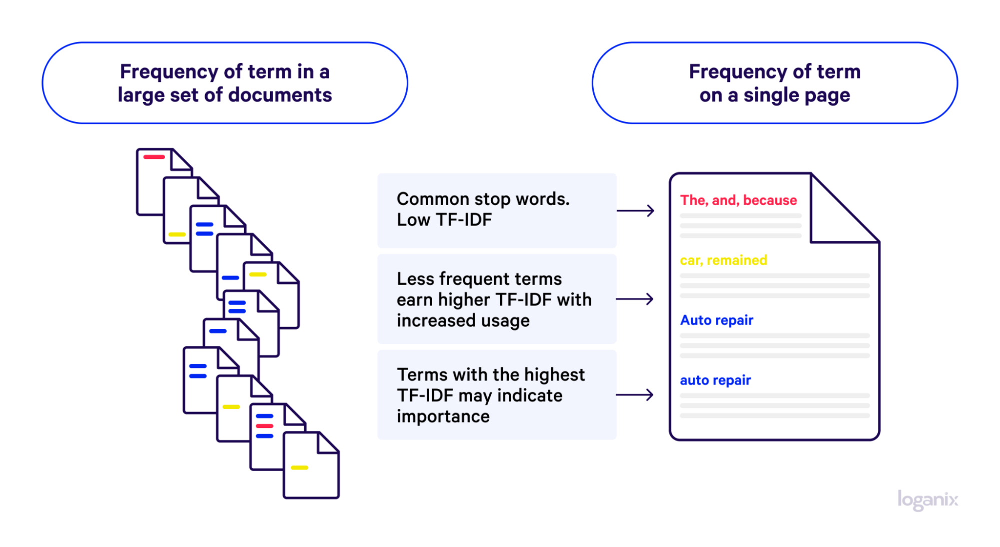
from sklearn.feature_extraction.text import TfidfVectorizer docs = ["AI is powerful", "AI is everywhere"] tfidf = TfidfVectorizer() X = tfidf.fit_transform(docs) print(X.toarray())
Word2Vec generates dense vector embeddings capturing semantic relationships between words. It uses CBOW and Skip-Gram architectures to learn contextual relationships. It allows models to understand similarity and analogies.
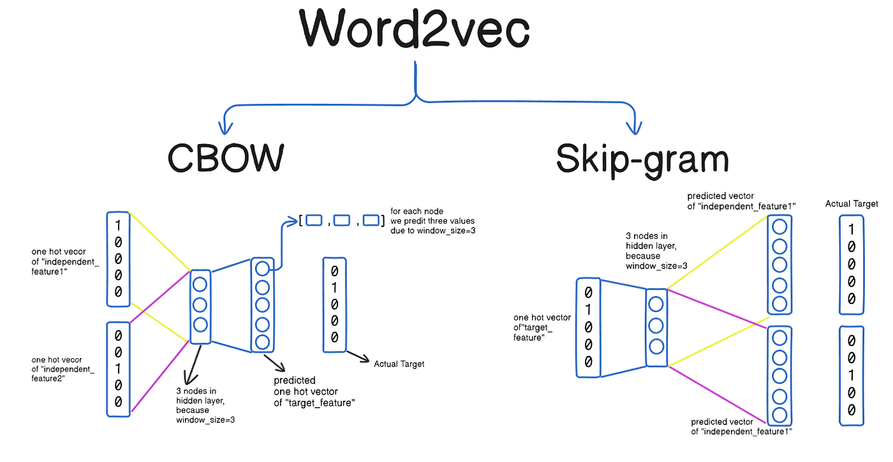
from gensim.models import Word2Vec
sentences = [["king","queen"],["man","woman"]]
model = Word2Vec(sentences, vector_size=50, min_count=1)
print(model.wv.most_similar("king"))
Part-of-Speech (POS) tagging is the process of assigning grammatical categories such as noun, verb, adjective, or adverb to each word in a sentence. It plays a crucial role in understanding the structure and meaning of natural language. Since many words can have different meanings depending on context, POS tagging helps resolve ambiguity by identifying the correct role of each word. For example, the word “book” can be a noun or a verb depending on usage. POS tagging enables machines to better understand sentence structure, which is essential for tasks like parsing, translation, and information extraction. It acts as a foundational step in building intelligent NLP systems.
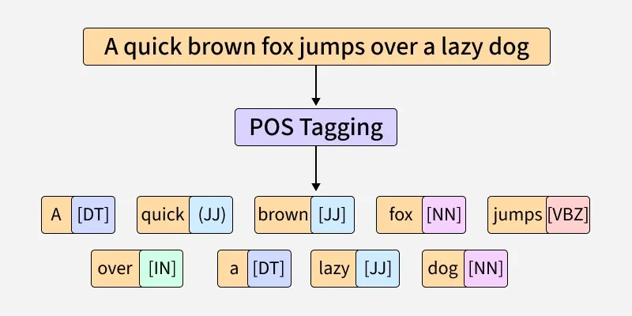
import nltk
nltk.download('punkt')
nltk.download('averaged_perceptron_tagger')
text = "AI is transforming industries"
tokens = nltk.word_tokenize(text)
pos_tags = nltk.pos_tag(tokens)
print(pos_tags)
Named Entity Recognition (NER) is a Natural Language Processing technique used to identify and classify important entities in text into predefined categories such as person names, organizations, locations, dates, and more. It transforms unstructured text into structured information, making it easier for machines to understand real-world context. For example, in the sentence "Elon Musk founded SpaceX", NER identifies "Elon Musk" as a person and "SpaceX" as an organization. This capability is essential for building intelligent systems that can extract meaningful insights from large volumes of text. NER is widely used in search engines, chatbots, recommendation systems, and financial data analysis.
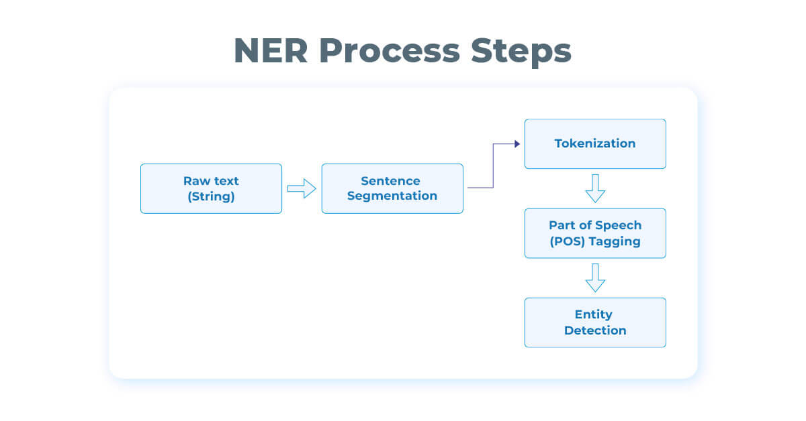
import spacy
# Load pre-trained model
nlp = spacy.load("en_core_web_sm")
text = "Elon Musk founded SpaceX in California in 2002"
doc = nlp(text)
# Extract entities
for ent in doc.ents:
print(ent.text, ent.label_)
Recurrent Neural Networks (RNNs) are a class of neural networks designed to handle sequential data by maintaining a hidden state that captures information from previous time steps. Unlike traditional feedforward networks, RNNs process input data step-by-step, allowing them to model dependencies in sequences such as text, speech, and time-series data. This makes them particularly useful for tasks where context and order matter. For example, in a sentence, the meaning of a word often depends on the words before it. RNNs attempt to capture this temporal relationship by passing information through hidden states. However, they suffer from limitations like vanishing gradients, which led to the development of more advanced models like LSTM and Transformers.
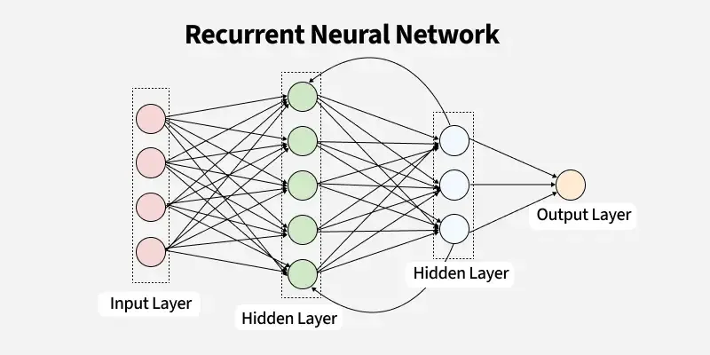
from tensorflow.keras.models import Sequential
from tensorflow.keras.layers import SimpleRNN, Dense
import numpy as np
# Sample sequential data
X = np.array([[[1],[2],[3]], [[2],[3],[4]]])
y = np.array([4,5])
# Build model
model = Sequential([
SimpleRNN(10, activation='tanh', input_shape=(3,1)),
Dense(1)
])
model.compile(optimizer='adam', loss='mse')
# Train model
model.fit(X, y, epochs=100, verbose=0)
# Predict
print(model.predict(X))
Long Short-Term Memory (LSTM) is a specialized type of Recurrent Neural Network designed to overcome the limitations of standard RNNs, particularly the vanishing gradient problem. While traditional RNNs struggle to retain information over long sequences, LSTMs introduce a gating mechanism that allows the network to selectively remember or forget information. These gates—input, forget, and output—control the flow of information through the network, enabling it to capture long-term dependencies effectively. This makes LSTMs highly suitable for tasks where context over long sequences is important, such as language modeling, translation, and speech recognition. LSTMs played a crucial role in advancing NLP before the rise of Transformer-based architectures.
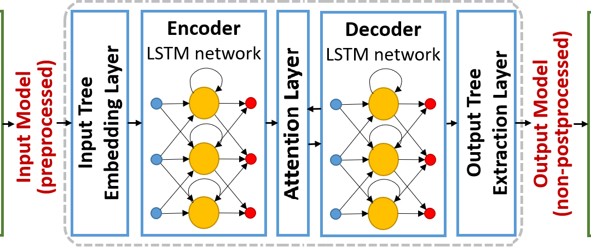
from tensorflow.keras.models import Sequential
from tensorflow.keras.layers import LSTM, Dense
import numpy as np
# Sample sequential dataset
X = np.array([[[1],[2],[3]], [[2],[3],[4]]])
y = np.array([4,5])
# Build LSTM model
model = Sequential([
LSTM(50, activation='tanh', input_shape=(3,1)),
Dense(1)
])
model.compile(optimizer='adam', loss='mse')
# Train model
model.fit(X, y, epochs=100, verbose=0)
# Predict
print(model.predict(X))
Evaluation metrics are used to measure how well an NLP model performs on a given task. Since models make predictions, it is essential to quantify how accurate and reliable those predictions are. Different tasks require different evaluation methods—for example, classification tasks use precision and recall, while text generation tasks may use BLEU or ROUGE scores. A good evaluation metric helps identify model strengths and weaknesses, ensures fair comparison between models, and guides improvements. Without proper evaluation, a model may appear accurate but fail in real-world scenarios. Therefore, choosing the right metric is as important as building the model itself.
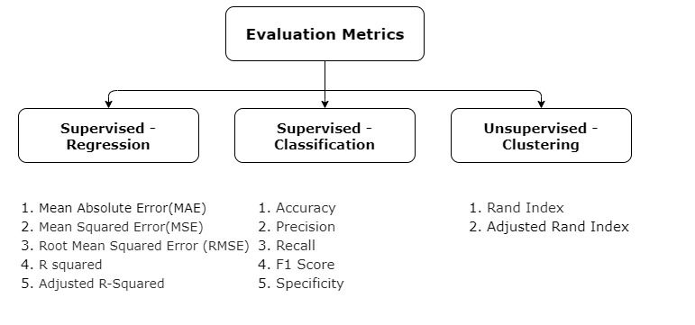
from sklearn.metrics import precision_score, recall_score, f1_score
# Actual and predicted labels
y_true = [1, 0, 1, 1]
y_pred = [1, 0, 0, 1]
# Calculate metrics
precision = precision_score(y_true, y_pred)
recall = recall_score(y_true, y_pred)
f1 = f1_score(y_true, y_pred)
print("Precision:", precision)
print("Recall:", recall)
print("F1 Score:", f1)